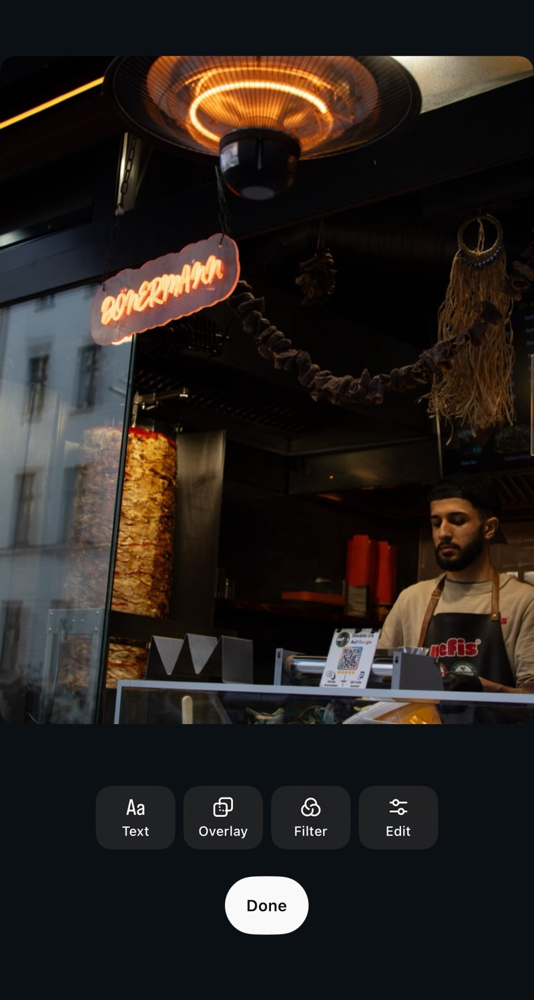
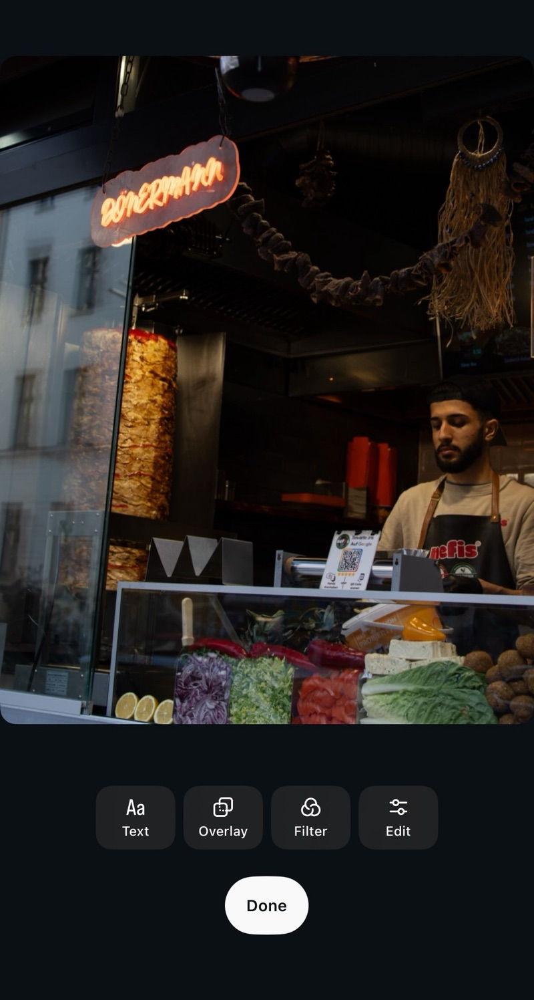
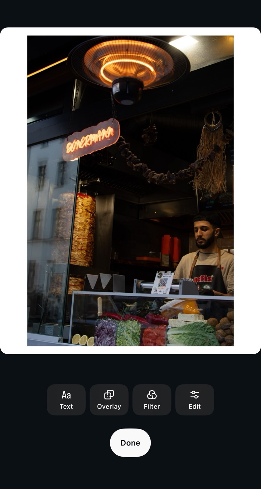

1:1 Square
1080 × 1080 px
Classic grid look. Good when you have mixed portrait and landscape photos in one set.
Pick the right shape, keep the full photo visible, and export a clean post from Simple Border.
Instagram works best when your photo already fits the place you want to post it. If the shape is too wide or too tall, Instagram may crop it. Simple Border solves that by adding space around the photo, so the full image stays visible.
Start with where the photo will appear. These are the practical choices most people need.
1080 × 1080 px
Classic grid look. Good when you have mixed portrait and landscape photos in one set.
1080 × 1350 px
A safe feed default. It gives the photo more vertical space without feeling oversized.
1080 × 1440 px
A tall portrait shape that fits well in the feed and on profile grids. It matches an iPhone photo taken upright – the camera shoots 4:3 by default, which is 3:4 held vertically – so the full frame fits with no crop.
1080 × 1920 px
Fills the vertical screen for Stories, Reels covers, and full-height sharing.
Those are commonly recommended sizes for each shape. Simple Border never shrinks your photo – it adds the border at your image's full resolution, so the export is usually larger than these numbers and stays sharp. Many photographers also find that posting from a computer at instagram.com preserves a little more detail than the phone app. See Instagram Help for the official limits.
Force a photo to fill the frame and Instagram has to cut something. A border keeps the whole shot.



Use 4:5 when you want more screen space. Use square when the composition is already balanced.
Use one format for every slide. Square is easiest for mixed shapes; 4:5 feels more immersive.
Use square or 4:5 with borders if cropping would remove important parts of the scene.
Try 3:4 first if it matches the camera photo. Use 4:5 when you want a familiar feed shape.
Use 9:16. Add a blurred border if the original photo is not tall enough.
Use white or black borders and keep the same thickness across a set.
Put the photo inside a format Instagram can show. Simple Border adds space around the image instead of cutting into it.
Simple Border adds pixels around the original image and is built to keep the export sharp.
Use one format for every slide. Square is simple for mixed photos, while 4:5 gives more vertical space in the feed.
Use white or black for a clean gallery look. Use soft blur when you want the empty space to feel like part of the image.
Preparing a full post? Read the Instagram carousel guide. New to borders? Start with the photo border guide.